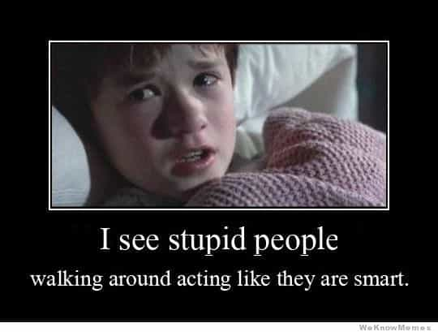
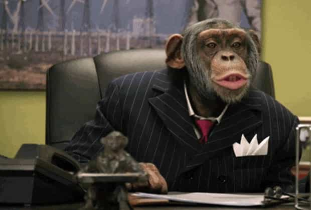

Corey is an iconoclast and the author of 'Man's Fight for Existence'. He believes that the key to life is for men to honour their primal nature. Visit his new website at primalexistence.com


Anger had always been an issue for me. It’s actually embarrassing to remember all the times I flared up over insignificant matters and worthless individuals. My past experience, however, did teach me few things about the nature of anger.
First, anger, in every form, is all about power. Anger exists because it protects us from harm whether it be a harm to your body or harm to your reputation that will ruin your social status. Anger also drives us to defend what we care for whether it be your loved ones or your tribe and beliefs. But, of course, it’s also used as a means to assert and maintain your dominance over others. In any way you see it, anger functions as a way to both guard and expand your power.
But anger, like fire, can either help you or destroy you—you must be the one in control. And to master anger, you must be aware of how you’re using it: You’re either using anger to control a situation or you’re throwing a tantrum because you have no control.
So, for all situations that induce rage, disgust, and bitterness, ask yourself the Anger Question: Is my anger helping me defend, assert, or improve my life situation in any way? If the answer is no, cool down and disengage. There’s no point burning your energy needlessly.
To get you started, here are some common things that enrage people that shouldn’t.

The past is gone; it exists only in your mind. Just learn whatever lesson you must and move on. You should also know that our memories are prone to biases and distortions—especially with emotional events. So, don’t get distracted over something that is irrelevant to your current life that’s distorted and unreal.

Stupid people have always existed and they will continue to exist no matter how much they annoy you. It’s absurd to claim that there are people who are so imbecilic as to “insult” your intelligence and “lower” your IQ. If you’re so easily offended by your supposed intellectual inferiors, maybe you’re not as smart as you think you are.

I once had the misfortune to witness a morbidly obese man on a scooter moaning about lack of accessibility in an aging facility. He did nothing to battle his obesity (he drank Pepsi non-stop and even took his medicine with it, claiming that it was impossible for him to drink something without sugar), but he felt like he had the right to complain even as he was being pampered by the government that paid all his medical expenses.
I used to feel utter disgust and rage by these type of people who relish in their victim-status and see weakness as a virtue, but I just don’t see the point anymore. These days, I prefer detached contempt.
Speaking of stupid and disgusting people, feminists and SJWs are some of the most idiotic and nauseating people to have ever existed on Earth. But what does getting outraged and hating them accomplish? These people are being deliberately provocative to troll you. They want you to play their negative-sum game so that you’ll drop down to their level of misery. By spewing your hatred towards them, you’re playing into their hands and giving the attention they crave. The better option is to ridicule them like the joke they are or just ignore them.

The truth is, unless you have people who are actively plotting to harm you or kill you, you don’t really have “enemies.” Maybe you have resentment towards your useless boss, a bitch ex, or people who insulted you or betrayed you in the past, but unless they’re somehow trying to destroy you this very moment, holding on to anger will only torment you. You’re essentially letting your “enemies” win just by keeping them in your mind. Kick them out.
During my more miserable years, I followed sports to numb myself. Oh, the joys of rage, frustration, anguish, and disappointment that comes with cheering for a sub-par team—not to mention being burned with humiliation by your laughing rivals. I finally ended the idiotic self-torture when I decided that my own life was too important to be sitting and watching millionaire entertainers duke it out in a modern-day circus.
You’re angry that girls won’t date you because of your race, height, or whatever? You blame your parents and shitty upbringing for your current problems? Oh please, countless men have succeeded in spite of having gone through harsher conditions than you have. Even if you have a legitimate case of hardship, you’re wasting your energy on anger if you’re not directing it towards self-improvement.
Growing up financially unstable, I used to get high-strung over money and possessions—every dollar and every cent counted for me. I guarded my possessions like my own children and I would get furious for days when something got damaged, lost, or stolen. This is what happens with a scarcity mindset: you fuss over the insignificant stuff.
Wealth is vital to your well-being, but acting like it’s the most important thing in the world and getting overly attached to your possessions is petty and pathetic. Don’t be an arrogant dipshit like this Ferrari owner:

Getting angry at professional politicians for being corrupt liars is like getting angry at professional prostitutes for being dirty and slutty. I actually find it hilarious how much hatred people hold for the likes of Obama and Trump.
Get it through your head: unless you’re actively doing something to get them out of office, you’re getting fussed up over something you can’t control.

Know that the media makes its money by garnering your attention with the most negative and conflict-arousing drama they can find in the world while feeding you propaganda at the same time. What is the point of getting angry over something happening around the world that doesn’t even affect you? Even the local news is barely relevant to your own life. If there’s something important that I should concern myself with, I’m sure I’ll hear about it through the word of mouth.
We all know how bitchy the SJWs get when faced with opinions that go against their delusions, so isn’t it time to stop doing the same? Why get angry because someone would dare espouse socialist ideas or express their Christian beliefs? You don’t have to prove them wrong and you probably won’t change their minds anyway. Focus your energy on things that benefit you instead.
To continue with the previous point, most arguments—especially regarding politics or religious beliefs—are total waste of time. I remember all my heated online arguments from the past, and guess what: they’ve accomplished exactly nothing. Unless you’re doing it to defend your reputation, to win over an audience that matters, or as part of your job, arguing is almost always unnecessary. If you’re going to argue, do it for practical reasons and not for your ego.
I personally find this the hardest to swallow. It’s a familiar story: spoiled feminist girls get to engage in weekly, alcohol-fueled debauchery thanks to their indulging parents that support their lifestyle while their supposed oppressors—the men—are working their asses off just to get by (or getting maimed and killed in wars). I can repeat the same scenario in many variations. But I guess the world has always been unfair and complaining about it is not going to change it.
In the end, all we can do is focus on improving our own lives while ignoring these human garbage.

You messed up, embarrassed yourself, and now you’re angry with no one to blame but yourself. It’s a tough place to be in and you’ll find little sympathy anywhere. But no matter what you did and how badly you screwed up, you must find a way to forgive yourself and move on. Failure to do so can be fatal.
Now, I’m not suggesting that you flat-out banish anger from your life; that would be a woeful mistake. As I’ve said in the beginning, anger is vital for your existence, which is why you must tame it and use it to your advantage. All I’m suggesting is that your energy and focus be concentrated towards creating value for yourself, no more.
Also, now that I’m more stoic, I do find that people mistake my lack of reactiveness with weakness. I therefore suggest that you always keep some heat on so that people don’t think you’re a pushover.
To conclude, tame your anger like you would a wild horse. You must command your anger lest you be commanded by it. Don’t get angry over worthless matters that bring no value to your life and focus your energy on worthwhile things you can take practical action on.
Read More: 5 Stupid Photos Girls Can’t Stop Taking